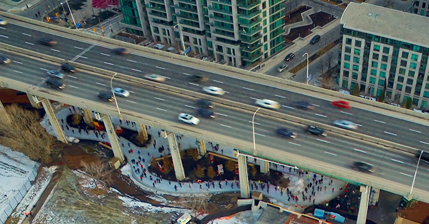
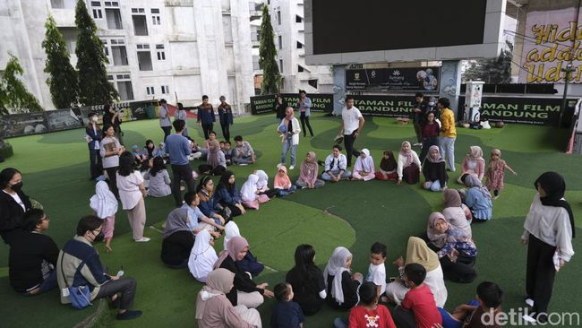

Hover over the points on the map and click on them to learn more about the five examples of revitalisation of underutilised spaces under flyovers.
To explore other locations, click on the home button at the right to return to the default extent of the map, and then click on a new point on the map.
For optimal viewing experience, please access using a desktop instead of mobile.
Claiborne Corridor is located under the Interstate-10 Expressway, along North Claiborne Avenue between St Bernard Avenue and Canal Street, in New Orleans, Louisiana, USA.
The Bentway is a public multi-use space located under the Gardiner Expressway, between Fort York Boulevard and Fort York Historic National Site. It is most famous for being an ice-skating park during the winter months, but it also serves as a public art gallery, skating park and a venue for various events throughout the year. It is situated within the Fort York neighbourhood in downtown Toronto, and surounded by high-rise residential developments.

Although there have been intentions to create "a plaza-like area" with "publicly-accessible thoroughfares for pedestrians..., public art... [and] outdoor amenity space" at this specific area since 2004, it was Ken Greenberg, a renowned urban designer and author, who got the ball rolling in 2011.
Then, he pitched this idea to urban planner Judy Matthews and her husband Wilmot, an investment banker, who wanted to fund a "legacy project" in the city (Hess & Stevenson-Blythe, 2022).
The idea won the support of the city because it was also aligned with the city's aims to enliven the underutilised areas along the elevated portions of Gardiner Expressway (marked in purple in the map), which has long served as a barrier between the main downtown areas to its north and the Waterfront to its south.
After an initial seed donation of CAD$25 million from Judy and Wilmot, the city announced "Project: Under Gardiner" to revitalise the entire stretch, of which the Bentway is a part.
The Bentway was officially opened to the public in January 2018, with about 20,000 people coming to use the space on its opening weekend (Cecco, 2024)
A City Council report recommended the creation of a new non-profit organisation to manage and finance the day-to-day operations of the Bentway (City of Toronto, 2016).
This non-profit organisation, The Bentway Conservancy, was established the following year.
The decision to let a private entity, albeit non-profit, to manage a public space that is essentially owned by the city (by virtue of the expressway that runs above it) is made because the city would face serious budget constraints had it been under full municipal jurisdiction.
This practice is also in line with numerous other projects done across Toronto, where the city would own the infrastructure but let a separate private entity to run it (Hess & Stevenson-Blythe, 2022).
Pertaining to funding, the city committed CAD$10 million, to be disbursed over a period of eight years, to the Bentway Conservancy.
The city also empowers the Bentway Conservancy to seek alternative funding sources such as sponsorships, donations and collecting fees from nearby businesses through Business Improvement Association.
This conservancy model has proven successful because the Bentway remains a well-attended space seven years after its opening.
The Conservancy is also appointed as partners with the city to realise "Project: Under Gardiner", which has since been rebranded as Under Gardiner Public Realm Plan.
One Green Mile is located under the Elphinstone Flyover, along Senapati Bapat Marg, in Mumbai, Maharashtra, India.
A8ernA is located under the A8 motorway, between N203 provincial road and the Zaan River, in Zaanstad, North Holland, the Netherlands.
Taman Film (Film Park) is a public space located under the Jalan Layang Pasupati flyover, in Bandung, West Java, Indonesia. As the name suggests, on top of accommodating communal/cultural gatherings for residents in the area, the space also has audiovisual equipment that can facilitate public screenings of films or football matches. Taman Film is part of a chain of parks within the entire revitalised area that is marked red on the map - it also comprises Taman Jomblo (Lonely Hearts' Park), a skate park and an indoor futsal court (Heinzelmann & Suryawinata, 2020).

The underutilised space came to be after Jalan Layang Pasupati Flyover was inaugurated in June 2005, meant to connect the city of Bandung directly to the then-capital city of Jakarta.
The sheltered area under the flyover made it a hotspot for illicit criminal activities such as drug dealing, cockfighting and even gang fights (Ihsanti & Sugiyantoro, 2024).
It was from 2010 onwards when the space also started to accommodate other economic activities and vehicle parking, largely due to the opening of a shopping mall just to the south of the area.
In 2014, after winning the Bandung mayoral election, Mr Ridhwan Kamil sought to make good on his campaign promises to revitalise and improve the quality of public spaces in the city.
That resulted in the Thematic Parks Bandung Programme, which included the creation of Taman Film as part of the chain of parks at the site.
The efforts in making the park was largely a top-down one, as the municipal government largely did not consult the local residents.
Instead, it engaged a Dutch-based architectural firm to develop Taman Film.
Taman Film was inaugurated in September 2014.
Taman Film is under full jurisdiction of the municipal government, as it appoints staff to manage daily operations and cleanliness of the area.
However, for the first three years, the funding for the park was derived from corporate social responsibility (CSR) funding from two local companies.
Municipal government assumed the financing responsibility thereafter.
Hence, the capital upgrades that were done in 2018, such as carpeting the park with artificial grass, were borne from municipal coffers (Heinzelmann & Suryawinata, 2020).
2018 also happened to be the final year of Mr Ridhwan Kamil in office as Mayor of Bandung.
Nevertheless, Ihsanti and Sugiyantoro (2024) reported that several facilities have fallen into disrepair after the pandemic - including the projector screen and the futsal court.
The quality of cleanliness in Taman Film were also reported to have declined.
This suggests that the loss of a strong political supporter could lead to lack of political will in keeping a promised public space in state of good repair, especially if there are no secondary sources of funding and management and local organising to manage the space was not done.